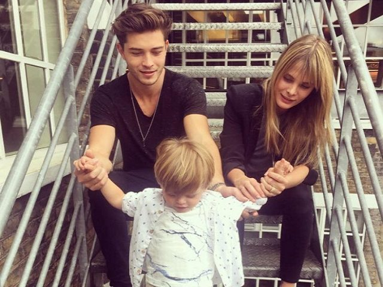

Layout

Biografía
Francisco Pichicona Lachowski (Curitiba, 13 de mayo de 1991) es un modelo brasileño.1 Reconocido por modelar para Gucci y Armani. Ha hecho campañas de grandes marcas como Dolce & Gabanna y Versace. Creció en Sao Paulo con sus dos hermanas mayores Marcela Lachowski, Isabella Lachowski y su hermano Rubén Pichicona Lachowski. En 2013 se casó con Jessiann Gravel Beland. Tiene dos hijos: Milo y Laslo Lachowski.
